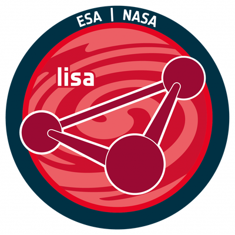

LISA Spain Collaboration
LISA Spain is the community of researchers in Spain working on the Laser Interferometer Space Antenna (LISA), the first gravitational wave observatory in space, a mission led by the European Space Agency (ESA) in partnership with its member states and NASA. LISA Spain is open to everyone in Spain interested in LISA: research groups, institutions, students, and industry.
Its goal is to bring together everybody involved in LISA in Spain, to help Spain carry out its commitments to the mission, and to make the most of the extraordinary science LISA will deliver.
Join LISA Spain & get in touch
Mailing list of the LISA Spain community, used to send and receive announcements.
Subscribe to the listTo contact the members of the LISA Spain Council.
For any question about the LISA Spain Collaboration, or to register your group.
The LISA Mission
LISA will consist of three spacecraft forming a nearly equilateral triangle, linked by laser beams, that follows the Earth in its orbit around the Sun while the triangle slowly rotates. Each spacecraft both sends and receives laser light to and from the other two, so that the constellation works as a giant interferometric gravitational wave detector.
From space, LISA will open the low-frequency (millihertz) gravitational wave window, inaccessible from the ground, and with it a wealth of new sources: mergers of massive black holes, extreme mass-ratio inspirals, thousands of compact binaries in our Galaxy, and possible stochastic backgrounds of cosmological origin.
The mission is organised according to its Science Management Plan. The LISA Science Team (LST), 20 scientists selected by ESA and NASA, is the liaison between the project teams and the scientific community, while the LISA Consortium gathers scientists and engineers from all over the world working on LISA. Science operations rely on a European Distributed Data Processing Centre (DDPC), to which Spain contributes, and on a NASA Science Ground Segment.
Spain's Contribution to LISA
Spain is one of the signatories of the Multilateral Agreement (MLA) between ESA and some of its member states, which sets out the national contributions to the LISA instrument and to its ground segment.
The Instrument: Science Diagnostics Subsystem
The Spanish hardware contribution is the Science Diagnostics Subsystem (SDS), one of the four main member-state contributions. The SDS monitors the environment of the instrument (temperature, magnetic field, radiation), which is essential to identify disturbances that could mimic gravitational wave signals. On each spacecraft, a Diagnostics Acquisition and Control Unit (DACU) controls all the diagnostics items. For the full constellation Spain provides:
- 6 DACUs
- 144 temperature sensors
- 12 magnetometers
- 6 coils (audio-band magnetic sensors)
- 12 heaters
- 3 radiation monitors
The Ground Segment
As established in the LISA MLA, the Spanish contribution to the LISA Ground Segment consists of:
- The development of a Global Fit pipeline to produce the catalogue of LISA gravitational wave sources (L2 data) from the L1 data, within the CU-L2D coordination unit of the Distributed Data Processing Centre (DDPC).
- The deployment in Spain of a LISA Data Computing Centre (DCC) and contributions to the system engineering work packages.
- Contributions to the software and data processing of the Science Ground Segment and to the scientific operations of the mission.
- Contributions to the development of gravitational waveform models within the Waveform Coordination Unit (CUWaV) of the DDPC, incorporated as an official Spanish contribution in the new version of the LISA MLA.
What is LISA Spain?
LISA Spain is a community open to all actors in Spain with the following aims:
Science & Commitments
Maximise the scientific efforts and help carry out the commitments of Spain to the LISA mission.
Connect
Connect people in institutions based in Spain working on LISA-related topics, encouraging collaboration and knowledge exchange, and pooling financial and computational resources.
Visibility
Increase the visibility of the LISA mission with the Spanish government, institutions and the general public.
Careers
Strengthen career pathways both within the LISA mission bodies and within the Spanish academic and industrial system.
Structure & Activities
Since many other bodies already coordinate work on LISA, LISA Spain has a deliberately light structure, so that anybody interested can easily join the community. It is coordinated by the LISA Spain Council, formed by volunteers from the community with sufficient seniority or experience (postdocs and above), together with a postgraduate representative and with a limit on the number of members from any single institution. Individuals with formal LISA positions (LST members, DDPC leads and chairs, LISA Consortium chairs and council representatives, Spain-based LISA-related ESA staff, etc.) are expected to be part of the Council. A subset of the Council forms the Scientific Organising Committee (SOC) of the annual LISA Spain Meeting, as well as other task teams when needed.
LISA Spain Meetings
The annual LISA Spain Meeting is the main gathering of the community, where the Spanish groups working on LISA present their work and discuss the Spanish contribution to the mission. The LISA Spain Council oversees its organisation: it selects the host institution, forms the Scientific Organising Committee, and supports the local organisers. The meetings held so far are:
Main activities
- Overseeing the organisation of the annual LISA Spain Meeting.
- Supporting the roadmaps and infrastructure needed to fulfil Spain's commitments to LISA.
- Maintaining this website with information on LISA Spain and its groups.
- Outreach activities to increase the visibility of and participation in LISA in Spain.
- Periodic surveys of the community (demographics and interests).
Council members commit to
- Meeting once every two months (more often for the SOC and task teams when needed).
- About four hours per month, on average, devoted to LISA Spain activities.
- At least one year of commitment (renewable).
LISA Spain Council
The current members of the LISA Spain Council are listed below. You can write to the whole Council at lisa_spain_council@listas.csic.es.
- Borja Anguiano (CEFCA)
- Daniela Doneva (UV)
- Juan García-Bellido Capdevila (IFT-CSIC/UAM)
- César García Marirrodriga (former ESA)LISA Pathfinder Project Manager and Manager of the LISA Study Phase
- Anna Heffernan (UIB)Spanish member of the LISA Science Team (LST)
- Sascha Husa (ICE-CSIC, IEEC & UIB)DDPC CUWaV PA/QA
- Sachiko Kuroyanagi (IFT-CSIC/UAM)
- Ignacio Mateos (UCA)LISA Consortium Council member
- Miquel Nofrarias (ICE-CSIC & IEEC)Science Diagnostics Subsystem (SDS) Lead
- Javier Olmedo (UGR)
- Ramón Pardo de Santayana (ESA-ESOC)
- Mauro Pieroni (IEM-CSIC)
- Antoni Ramos Buades (UIB)DDPC Massive Black Hole Binary sub-unit co-chair; UIB LISA PI
- Alicia M. Sintes Olives (UIB)
- Carlos F. Sopuerta (ICE-CSIC & IEEC)DDPC Spanish Delegate
- Jesús Torrado (IEM-CSIC)
Groups in the LISA Spain Community
Research groups and institutions in Spain that have registered with LISA Spain. Is your group missing? Write to lisa_spain_info@listas.csic.es.
- IPARCOS – Universidad Complutense de Madrid
- Instituto de Estructura de la Materia (IEM-CSIC)
- Instituto de Física Teórica (IFT UAM-CSIC)
- CIEMAT
- Universidad Politécnica de Madrid (UPM)
- ESA Science Operations Centre (SOC-ESAC)
- Institut de Ciències del Cosmos (ICCUB)
- Institute of Space Sciences (ICE-CSIC)
- Institut de Física d'Altes Energies (IFAE)
- Universitat Politècnica de València (UPV)
- Universitat de València (UV)
- Instituto de Física Corpuscular (IFIC)
- Universidad de Sevilla (US)
- Universidad Loyola Andalucía
- Instituto de Astrofísica de Andalucía (IAA-CSIC)
- FTAE – Universidad de Granada (UGR)
- Universidad de Cádiz (UCA)
- Universitat de les Illes Balears (UIB) – IAC3
- Universidad de Murcia (UM)
- Instituto Galego de Física de Altas Enerxías (IGFAE)
- Instituto de Física de Cantabria (IFCA)
- Universidad de Alicante (UA)
- Centro de Estudios de Física del Cosmos de Aragón (CEFCA)
- Universidad del País Vasco (UPV/EHU)
- Donostia International Physics Center (DIPC)
- Universidad de Salamanca (USAL)
- Instituto de Astrofísica de Canarias (IAC)